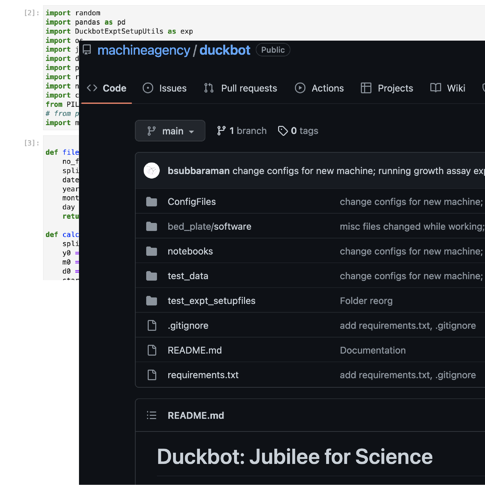

Custom Worfklow Automation with Jubilee
Blair Subbaraman | Sam Ferguson | Nadya Peek
Machine Agency, University of Washington
Scientific research is results-driven
Sometimes by any means necessary

Previously: “dull, dirty, and dangerous”
Robots have historically been for mass-production.
They are expensive, tedious to program, and difficult to customize & run.


Automation as a tool for Creative Exploration

Automation as a tool for Creative Exploration
requires...
- Modular, Low-cost, Extensible Hardware
- Human-centered Systems for Programming/Running Experiments
Modular, Low-cost, Extensible Hardware
Open-source design for distributed manufacturing


Digital fabrication of modular and customizable hardware
Human-Centered Systems for Programming Experiments

Duckbot
Duckbot
Hardware
pics of the tools
Duckbot
Machine Control
m = MachineCommunication(port)
m.moveTo(x=100, y=200, z=50)
m.toolChange(tools['media-syringe'])
m.moveTo(x=media_reservoir['x'], y=media_reservoir['y'])
m.aspirate(mL=20)
wellA1 = fetch_well_position(1, "A1") # (plate, well id)
m.moveTo(x=wellA1['x'], y=wellA1['y'])
m.dispense(ml=1.5)
Automating Growth Assays
define experiment → setup plates → collect data → analyze data
Automating Growth Assays
define experiment → setup plates → collect data → analyze data
Defining an Experiment
Experiment_name = "Demo"
genotypes = ["Sp7498", "Lm5500", "Lm8627", "Wa7788"]
media = ["0mM", "25mM", "50mM", "100mM"]
reps = 4


Plate Setup
video aspirating & dispensingDuckweed Transfer
video, maybe code blockDuckweed Transfer
Duckweed Transfer

Image Plates
video + code block (?)Image Plates
Image Plates